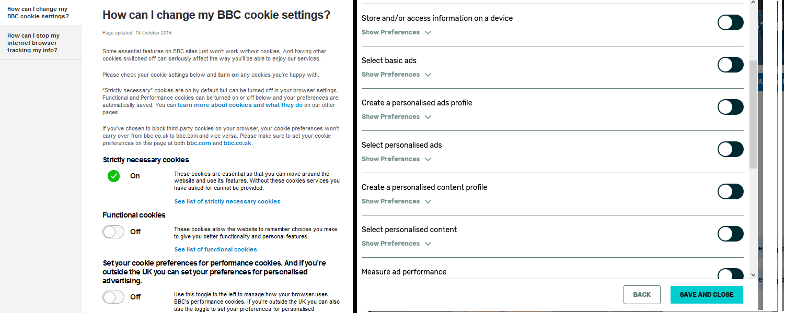

Global Privacy Control w.r.t GDPR
Intro to GPC and GDPR⌗
The [Global Privacy Control (GPC)] is a great idea, in the same way do-not-track was a great idea. A consistent method for people to opt out of data sharing everywhere. People should after all have a simple and straight forward way to opt out of data sharing. But as evidenced by do-not-track that’s not enough.
The GPC despite the ‘Global’ in the name is particularly narrowly targeted. In fact it’s just one state - California. Although you could argue that in practice means “America”. The GPC targets the California Consumer Privacy Act (CCPA), though it works quite a bit differently from GDPR. Here are some base GDPR tenants.
- “Consent should be given by a clear affirmative act” - GDPR is opt-in not opt-out; in Europe we have to get your permission first
- The consent must be “freely given, specific, informed and unambiguous” - We have to make sure we’ve clearly explained what you’re agreeing to
- “Silence, pre-ticked boxes or inactivity should not therefore constitute consent.” - We can’t even start by assuming you’ll agree
- “When the processing has multiple purposes, consent should be given for all of them.” - No big catch alls
And those are all excerpts from just one paragraph, the official GDPR PDF is 88 pages! But I’ll preface the rest of this by saying being from the EU I know GDPR not the CCPA. Take my CCPA pronouncements with the appropriate caution.
Where we are at the moment⌗
So, as a GDPR compliant website operator I already have a mechanism for you to opt in, and therefore opt out. But we do all have different ones. Different popups, different categories of processing, different purposes, so the boxes are different. GDPR is undoubtedly good but all these restrictions can be a bit of a pain. Obviously we need to store all this, what you’ve consented to and what you haven’t. But we also need to get all this from you before anything else. This means your first introduction to many GDPR compliant websites is the dialog of a million tickboxes1. If we add a new feature and thus a new third party processor, you get to see it again (didn’t you miss it?). If we embed Google Maps in a website we, acting as the data controller, have sent your information (albeit indirectly) to Google. So there’s a tickbox for that… you get the picture - we’re required to have this box (with some exceptions).
 The BBC’s page on the left is pretty inoffensive. Fandom’s on the right is well… not (note the scrollbar!). Who’s reading all those tick boxes and making an informed decision before using the website? I don’t believe for a moment their user acceptance rate is high for those settings.
So I want to add in the Global Privacy Control⌗
Actually no; lets take a step back and start one step earlier than that. As a website operator why do I want the GPC?. What does it do for me?
- It makes opting out easier - bad
- It’s a second thing to support and test costing developer time - bad
- A user could consent to my popup and send a GPC at the same time - bad
- The spec says not enabling it means the header doesn’t show - ?
Point 1 is clearly good for the individual but it’s bad for the business. Remember they want you opted in - it makes money sometimes a lot of money. Point 2 is self-evident. Point 3 is actually pretty complicated. I’ve now got two different signals from the user, in theory both are legally binding. If I pick the ‘wrong one’ for some unknown definition of ‘wrong one’ to be decided by the EU/ICO later on a case-by-case basis I’m on the hook. If I don’t support the GPC however and just ignore it completely then I’m back in the clear with my own self-consistent dialog. I had a chat with a colleague about adding support for this to one of our sites. Everything kept circling back to this legal grey area it would drop us in, rightly so (there’s enough already thanks). Finally point 4 means I can’t forgo the dialog in favour of the GPC because theres no explicit opt-in as we’ve already said GDPR requires. Functionally I can’t tell the difference between “opt in” and “GPC not supported”. We haven’t even gotten to the informed consent requirement we mentioned.
To be fair to the GPC it’s not trying to replace that GDPR dialog. But my point here really is that if it’s not attempting to replace that dialog what good is it to me given the above points? Again, it’s good for ‘you’ or ‘us’ but not ‘for the website’. In fact, if GPC gets legal recognition via CCPA and I run a global site I actually now legally need both. The lack of a GPC is enough for CCPA but not for GDPR. But also, remember they can disagree with each other! So now I need geoip based lookups to know what to serve; if I get it wrong and ignore the GPA to serve a GDPR notice the user consented to I’m potentially liable. If I listen to the GPA and ignore the GDPR consent I’ve got a user wondering why the feature they turned on still doesn’t work. My head hurts 😕
So what are these privacy things about anyway⌗
It seems to me the core tenant of the privacy regulations is this: You should have their permission. But wait! We have a model for that now don’t we? So hear me out here… What if our websites code looked like this?
var googleMapsPerm = {
title: 'Access Google Maps',
description: 'We would like your permission to send your data to google maps',
descriptionRich: `<p>
Can we show you a google map?
<small>This sends stuff to Google</small>
</p>`,
id: 'googleMaps'
};
document.getElementById('mapButton').addEventListener("click", function(ev) {
//Display a google map
navigator.privacyControl.query(googleMapsPerm.id).then(rs => {
if(rs.state == 'granted'){
showMap();
}else if(rs.state == 'denied'){
// :(
}else{
navigator.privacyControl.request(googleMapsPerm).then(rs => {
if(rs.state == 'granted') showMap();
});
}
});
});
That looks nice! Can we make it better? What if the browser then automatically added this header to requests for the backend?
PrivacyControl: googleMaps,perm2,perm3
Well I’m sold. But hey, it is my idea so I guess that doesn’t mean much. So lets see what advantages this may have.
- Uses a permissions flow web developers are going to be increasingly exposed to anyway
- Asks users at the time it’s needed rather than all at once at the start (when in theory the benefit of agreeing is evident)
- Browsers could store these against their accounts, remembering their choice across devices while being stateless on the server
- Easily polyfilled thanks to local storage
- Consistent UI across sites (i.e. globally consistent opt-out mechanics for the user)
- Could save development effort on websites, it’s stateless on the server side.
- It meets both the opt-in with informed consent requirement in GDPR and provides an opt out for CCPA
Points 1, 2, and 5 are self-evident. Point 3 is a bit of a pro/con situation in that it could expose to the browser what sections of the site you use. It’s something you’d want to be able to choose in your Firefox/Chrome settings if you sync or not I’d say. But given the browser can see what page etc. you hit anyway at even greater granularity I don’t think it’s a deal breaker for the convenience. Point 4 is always important when introducing new standards. Although the header injection couldn’t be shimmed you could certainly shim ajax requests. Or use a cookie.
Point 6 is the main thing here as I see it. Now we have a real positive business case for implementing this in new sites. You don’t have to do the state management and tracking against users and the logic that flows with it at the back end. It’s a simple javascript based trigger using a flow your developers (should) already be getting their head around. The browser integration cross-devices comes free of charge too. As a cherry on top if it was picked up by Chromium and Firefox you get to tell your local regulator you’re following the industry standard adhered to by every major browser (Edge, Chrome, Firefox). Compared to everyone’s different dialogs with different verbosity we have now. I’d also potentially wager that doing it in response to user action to enable features will result in higher user acceptance rates (remember in GDPR you can’t pre-tick the boxes!).
So what about the potential drawbacks.
- It could be a large retrofit to existing sites
- Requires Javascript
- If your initial page needs lots of permissions it could get messy
- CCPA doesn’t require an opt in making it less attractive to them as it might be for GDPR sites
Point 1 as I see it is true regardless. Either I update every relevant page to understand GPC or I update it to understand the permissions flow. For point 2, well virtually every dialog I’ve seen for GDPR needs javascript anyway. Point 3, I don’t have a solution to that I must admit. Any UI designers got an idea? Finally Point 4, I also don’t have many suggestions for this other than to point out as far as I can tell (but I’m no CCPA expert) if you meet GDPR you meet CCPA in this regard2. So by forgoing it you forgo getting US and EU compatibility in one go. Why not hit two birds with one stone?
Final thoughts - personal opinion⌗
In my personal opinion I think the bigger (stricter) target of GDPR is actually more important here as a target. The simple fact GPC as it sits leaves open the possibility in GDPR of having one supported mechanism opt in while another opts out is unacceptable. You could argue I could safely always defer to the opt-out. I’ll counter with the support calls I’ll get when a feature doesn’t work despite someone consenting in the dialog because Brave defaulted the GPC to ‘on’ without user interaction. Or because someone else on their PC enabled the GPC. I say this as someone who saw the GPC announcement and immediately went “How can I support this on our sites” to reluctantly come out at “I can’t” after talking with colleges about the practical realities. In any case we’ll need some qualified privacy lawyers to sort stuff out whatever we choose. But the community should have a few of those hiding somewhere.
I’m sure some people will note that almost nothing here actually requires browser support and they’d be correct. The main advantages of browser support are the potential cross-device synchronization coupled with the browser-consistent permissions UI. Theres not really any other way to get the same UI and management users are used to without browser support. In terms of managing user choices after they’ve been made (withdraw consent) it would let users withdraw consent the same way they do so for other things such as notification permissions. In my view that alone would be an improvement.
-
Theres also the ePrivacy directive or ‘cookie law’ etc. but for the purposes of this we’re lumping it all together as thats a minefield for another time. ↩︎
-
Other CCPA concerns exist like CCPA empowering users to delete the data business have collected, but GDPR also has those! But I’m sure theres non overlapping areas somewhere IANAL. Focusing on dialogs and permission here (One problem at a time!). ↩︎